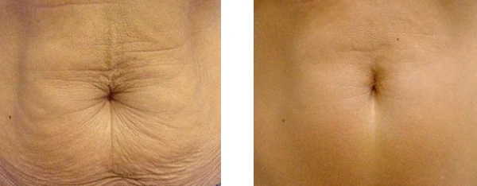
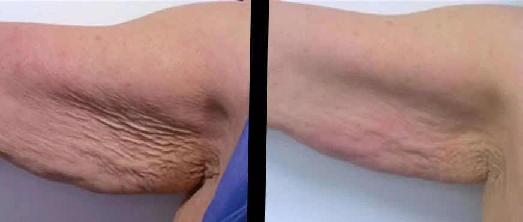
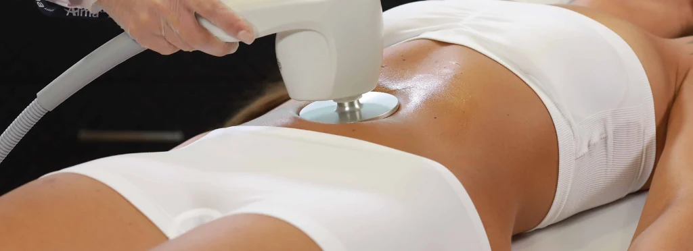

How to improve skin firmness on abdomen, arms or legs?
The loss of firmness in certain areas of the body is a common change after weight loss
or with the passage of years. The treatment with Accent Prime uses
radiofrequency and ultrasound to stimulate collagen and elastin production, helping to
visibly improve skin texture and tonicity. It is an effective medical option for those
looking for gradual and natural results, with professional guidance.

🎥 How do we treat body
flaccidity?
What is it for?
This treatment is indicated to improve skin firmness in various areas of the body. Its main benefits
include:
✔ Firm sagging skin: Ideal for areas such as abdomen, arms,
thighs, and face.
✔ Reduce cellulite appearance: Helps improve skin texture
and softness.
✔ Complement weight loss: Allows toning areas that have
become flabby after slimming.

Are there risks?
Skin tightening with Accent Prime is a safe and non-invasive procedure. However, mild
side effects may occur such as:
🔹 Temporary redness in the treated area.
🔹 Sensation of heat or mild swelling.
🔹 In rare cases, prolonged sensitivity.
These effects usually disappear in a few hours or days. To minimize any risk, it is fundamental to
perform the treatment with a trained specialist.
How to prepare for the treatment?
Before starting, it is important to follow some recommendations to optimize results:
✅ Prior consultation with a specialist to evaluate the area to be treated.
✅ Adequate hydration in the previous days.
✅ Avoid direct sun exposure before the procedure.
✅ Follow a balanced diet and exercise regularly.
What is the procedure like?
During the session, the specialist will apply Accent Prime technology on areas with
flaccidity. Through **ultrasound and radiofrequency**, deep skin layers are heated, stimulating collagen
production and favoring tissue firmness. The procedure is painless and does not require
anesthesia.
The session lasts between 30 and 60 minutes, depending on the area to be treated. At
the end, you can resume your daily activities without the need for rest.

How many sessions are necessary?
The number of recommended sessions depends on each patient, but generally between 4 and 6
sessions are suggested, with an interval of 2 weeks between each one.
Results are cumulative, improving with each session and reaching their peak in the three months
following the treatment.
Treatment Results
Skin tightening results with **Accent Prime** become visible progressively. notable reduction of
flaccidity, improvement in skin texture, and decrease of cellulite is observed. To prolong
effects, it is recommended to maintain a healthy lifestyle with hydration, balanced
diet, and physical activity.
We are at Federico Lacroze 2306, Belgrano. If you are looking for body flaccidity treatment in
Buenos Aires supervised by doctors, I can help you improve with progressive and natural
results.